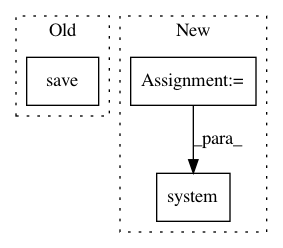

27e4a648a96c76de6b7ed24ea95ea76ee17f623d,pynets/registration/register.py,FmriReg,atlas2t1wmni_align,#FmriReg#Any#Any#Any#,773
Before Change
gm_mask_mni_img = nib.load(gm_mask_mni)
if len(gm_mask_mni_img.header.extensions) != 0:
gm_mask_mni_img.header.extensions.clear()
nib.save(gm_mask_mni_img, gm_mask_mni)
os.system("fslmaths {} -mas {} {}".format(aligned_atlas_t1mni, gm_mask_mni, aligned_atlas_t1mni_gm))
atlas_img.uncache()
img.uncache()
After Change
from nilearn.image import resample_img
aligned_atlas_t1mni = "%s%s%s%s" % (self.anat_path, "/", atlas, "_t1w_mni.nii.gz")
gm_mask_mni = "%s%s%s%s" % (self.anat_path, "/", self.t1w_name, "_gm_mask_t1w_mni.nii.gz")
gm_mask_mni_atlas_res = "%s%s%s%s%s" % (self.anat_path, "/", atlas, self.t1w_name, "_gm_mask_t1w_mni.nii.gz")
aligned_atlas_t1mni_gm = "%s%s%s%s" % (self.anat_path, "/", atlas, "_t1w_mni_gm.nii.gz")
uatlas_filled = "%s%s%s%s" % (self.anat_path, "/", atlas, "_filled.nii.gz")
os.system("fslmaths {} -add {} -mas {} {}".format(self.input_mni_brain, uatlas, self.input_mni_mask,
uatlas_filled))
regutils.align(uatlas_filled, self.t1_aligned_mni, init=None, xfm=self.atlas2t1wmni_xfm_init,
out=None, dof=12, searchrad=True, interp="nearestneighbour", cost="mutualinfo")
if uatlas_parcels is not None:
regutils.applyxfm(self.t1_aligned_mni, uatlas_parcels, self.atlas2t1wmni_xfm_init, aligned_atlas_t1mni,
interp="nearestneighbour")
else:
regutils.applyxfm(self.t1_aligned_mni, uatlas, self.atlas2t1wmni_xfm_init, aligned_atlas_t1mni,
interp="nearestneighbour")
try:
regutils.apply_warp(self.t1_aligned_mni, self.gm_mask_thr, gm_mask_mni, warp=self.warp_t1w2mni,
xfm=self.t12mni_xfm_init, interp="nn", sup=True)
except:
regutils.applyxfm(self.t1_aligned_mni, self.gm_mask_thr, self.t12mni_xfm_init, gm_mask_mni,
interp="nearestneighbour")
// Set intensities to int
atlas_img = nib.load(aligned_atlas_t1mni)
gm_mask_img_res = resample_img(nib.load(gm_mask_mni), target_affine=atlas_img.affine,
target_shape=atlas_img.shape)
nib.save(gm_mask_img_res, gm_mask_mni_atlas_res)
os.system("fslmaths {} -bin {}".format(gm_mask_mni_atlas_res, gm_mask_mni_atlas_res))
os.system("fslmaths {} -mas {} {}".format(aligned_atlas_t1mni, gm_mask_mni_atlas_res, aligned_atlas_t1mni_gm))
gm_mask_img_res.uncache()
atlas_img.uncache()
In pattern: SUPERPATTERN
Frequency: 3
Non-data size: 3
Instances
Project Name: dPys/PyNets
Commit Name: 27e4a648a96c76de6b7ed24ea95ea76ee17f623d
Time: 2020-01-02
Author: dpisner@utexas.edu
File Name: pynets/registration/register.py
Class Name: FmriReg
Method Name: atlas2t1wmni_align
Project Name: dPys/PyNets
Commit Name: 89df2ce3c461d343118ab2bbce87302ab670ef0f
Time: 2019-08-24
Author: dpisner@utexas.edu
File Name: pynets/core/utils.py
Class Name:
Method Name: make_gtab_and_bmask
Project Name: dPys/PyNets
Commit Name: a92b1c8dd2927559e735a8596618f5c607bc884a
Time: 2020-06-28
Author: dpisner@utexas.edu
File Name: pynets/registration/reg_utils.py
Class Name:
Method Name: gen_mask